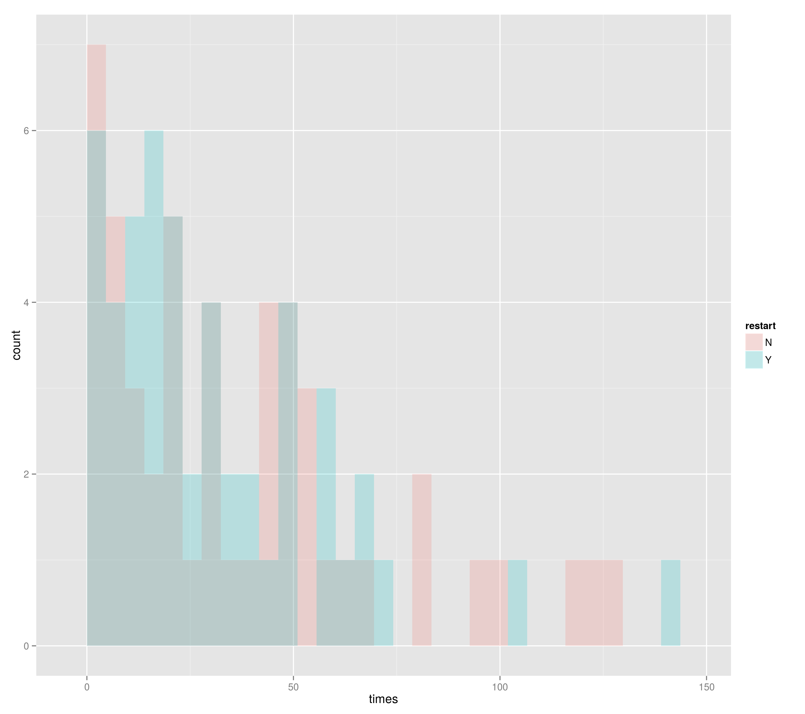
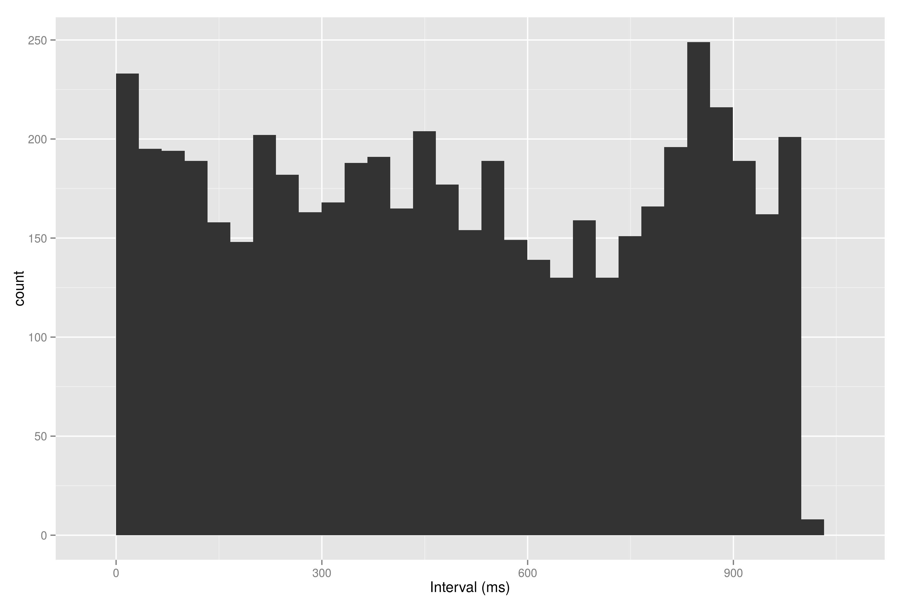
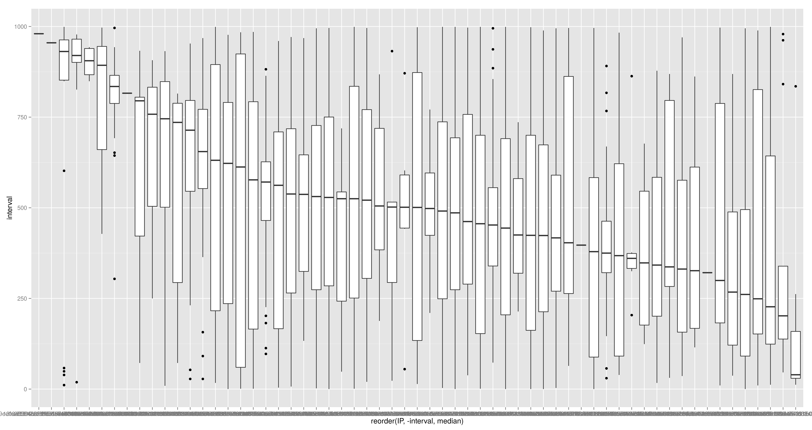

Solving the 40-Trap problem
Island evolutionary algorithm with migration
⇒ Best
⇐ Random
Server node.js, client browserified Nodeo
Hosted (free) in a PaaS: Heroku, OpenShift.



Async rules.
Volunteers are so not chaotic
There's always someone